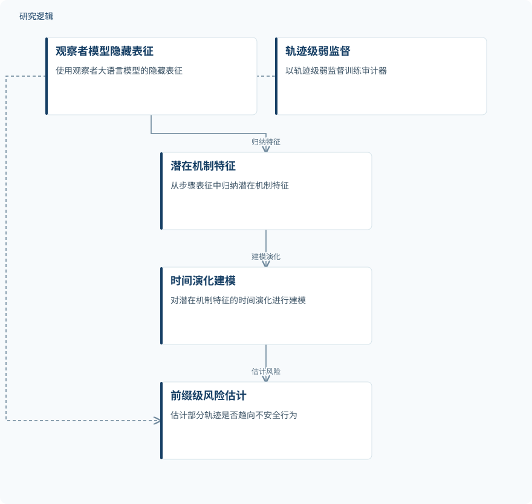

摘要解读
TRACES：基于轨迹状态建模的多轮大语言模型智能体主动安全审计
TRACES: Proactive Safety Auditing for Multi-Turn LLM Agents via Trajectory-State Modeling
解读更新 2026-11-27 22:05 · 依据公开摘要整理，未核验全文细节
大语言模型智能体在多轮调用工具、与环境交互时，风险可能早在最终结果出现之前就已形成。TRACES 尝试识别执行过程中的风险变化，为理解智能体的主动安全审计提供了一种思路。
文章目录
安全风险为何需要在轨迹中识别
智能体的行为不是一次性输出，而可能由多轮工具调用和环境交互组成。摘要指出，危险信号常常出现在中间步骤，等到最终结果显现后再进行事后诊断，可能已经错过风险发展过程中的提示时机。
这一问题的关注点因此从“最终是否安全”，扩展到“尚未完成的行为轨迹是否正在偏离安全方向”。及早识别并不等同于已经阻止风险，但可以为主动审计提供判断依据。
从观察者表征学习轨迹风险状态
TRACES 是一种基于表征的主动审计器。它利用观察者大语言模型的隐藏表征学习轨迹前缀的风险状态：从各步骤的表征中归纳潜在机制特征，再对这些特征随时间的演化进行建模，以估计部分轨迹是否正在趋向不安全行为。
逐步标注风险可能带来成本与判断歧义。为绕开这一困难，TRACES 使用轨迹级弱监督进行训练，同时输出密集的前缀级风险估计。摘要没有展开观察者模型或训练过程的具体配置。
依据摘要整理的轨迹风险估计过程


示意图仅概括摘要明确描述的表征建模和弱监督关系，并非论文原图。
下载 SVG图示关系说明
实线表示相邻阶段的信息流，虚线表示跨阶段联系或反馈。
观察者模型隐藏表征 → 潜在机制特征：归纳特征；潜在机制特征 → 时间演化建模：建模演化；时间演化建模 → 前缀级风险估计：估计风险；轨迹级弱监督 → 前缀级风险估计：弱监督训练
轨迹预测与主动风险辨别的摘要结果
摘要报告，在多个智能体安全基准上，TRACES 同时改善了完整轨迹的安全预测和主动风险辨别。这说明作者考察的不只是执行结束后的判断，也包括风险尚在发展时的辨别能力；但摘要未给出具体提升幅度。
作者的分析还表明，这些风险状态可能有助于训练更安全的智能体。这是一项值得关注的潜在用途，但摘要将其表述为分析所支持的可能性，不能据此认定它已经在所有长程任务中得到验证。
摘要尚不足以判断的验证范围
摘要没有说明各基准的样本规模、任务构成和具体比较对象，也没有提供性能指标、结果数值或不确定性信息。因此，仅凭当前资料无法判断改善的幅度、适用边界或相对不同审计方法的表现。
对于更安全智能体的训练，摘要也未交代具体训练设置与验证范围。这里的缺失仅指摘要未报告，并不意味着论文没有进行相关实验或讨论。
阅读启发：关注风险状态如何支撑早期判断
阅读启发：关注大语言模型智能体安全的读者，可进一步查阅论文如何定义轨迹前缀和风险状态，以及弱轨迹级监督如何支撑过程中的风险估计。这有助于理解其主动审计结论的适用条件。
建议同时留意基准、比较对象与更安全智能体的验证设置，区分风险辨别的实证结果和下游训练用途的分析性判断。
以上为本站阅读启发与建议，不是论文已验证的结论。